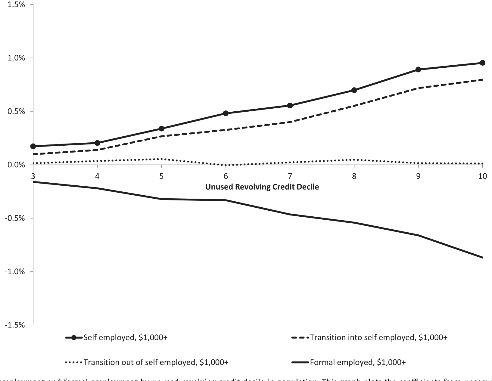
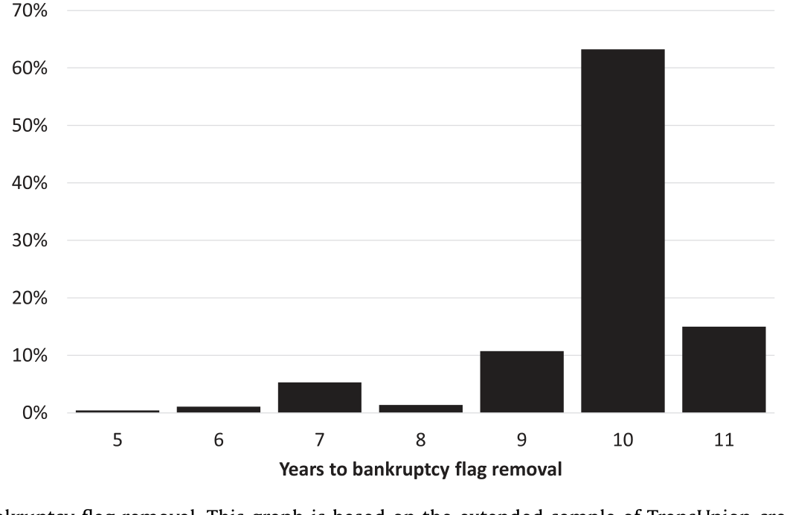
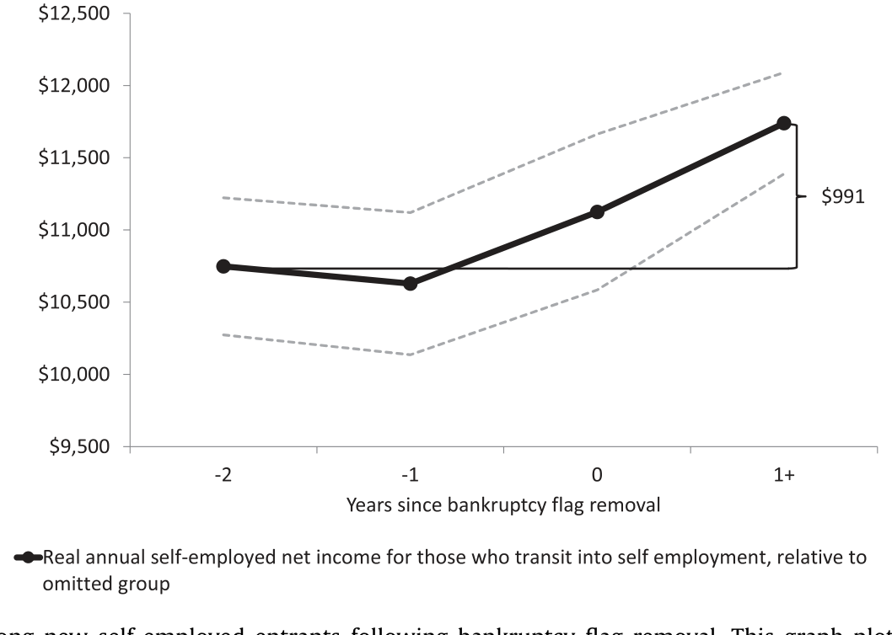
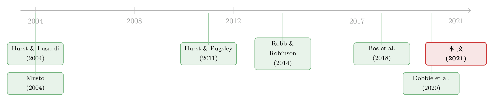

破产标记被抹去那天，他借到了钱，也开起了公司
本文读的是 Herkenhoff, Phillips & Cohen-Cole (2021, JFE)：把三百万人的报税记录和征信报告对接起来，作者发现「能不能创业、敢不敢雇人」高度依赖个人的消费信贷额度；而当一个人的破产标记依法从征信报告里被移除、信用额度突然跳升之后，他更可能去开一家雇人的公司，并且这些雇主创业者会比从前多借 $40,000（相对样本均值高出 33%）。这笔钱，验证的是「信贷约束」，而不是消费平滑、保险或信号。
1 一个被反复问、却始终答不清的问题
创业到底缺不缺钱？
这听上去像个不需要论证的常识——谁创业不缺钱呢。可一旦你想把它做成一个严谨的实证命题，麻烦立刻就来了。
经典的做法，是用财富给「融资约束」当代理变量。Hurst and Lusardi (2004) 那篇名作就是这么干的：他们发现，业主比例（business ownership）对财富其实相当不敏感，只有在财富分布的最顶端才看到明显的正相关。换句话说，如果真有「钱不够所以创不了业」的约束，它似乎只卡住了极少数人。这个结论一度让人怀疑：所谓的创业融资约束，是不是被高估了？
但这里藏着一个一直没被绕过去的死结：财富、收入、过往的工作履历、还有借钱的能力，全都纠缠在一起。 一个能借到很多钱的人，往往本来就更有钱、能力更强、收入也更高。你看到「能借钱的人更爱创业」，到底是钱起了作用，还是他这个人本来就更行？只要分不开这两样，「信贷约束」这个故事就永远只能停在相关性上。
本文要做的，正是把「信贷」这一个变量，从这团乱麻里单独拎出来。
2 先看一眼横截面：自雇和雇人，都随着信贷单调上升
在动用任何因果手段之前，作者先把这三百万「壮年」（prime-age）个体的征信数据摊开，问了一个最朴素的问题：可用的个人信贷越多，创业越多吗？
答案干净得出乎意料。无论是衡量自雇（self-employment，无雇员）还是衡量雇主创业（firm ownership，雇了人的小企业主），它们都随着个人的可用信贷单调上升——把人群按未动用的循环信贷（unused revolving credit）分成十档，从最低一档走到最高一档，自雇率和雇主率一路抬升。

Figure 1: Self-employment and formal employment by unused revolving credit decile in population. This graph plots the coefficients from unsecured revo
这就比 Hurst and Lusardi (2004) 用财富看到的「基本不敏感」要鲜明得多。作者的解读是：直接量「信贷可得性」，比用财富去代理它，信号要强得多。这一点也和 Robb and Robinson (2014) 对得上——他们发现很多初创企业本就是靠创始人个人的资产负债表在融资。
接着，作者把这种关系量化成了人群半弹性（population semi-elasticities）：
- 如果一个人的未用循环信贷在当年增加
10%，他在随后两年里的雇主创业率上升0.021个百分点——相对样本均值，这是7%的增幅； - 自雇率则在信贷增加
10%后的次年上升0.66个百分点——相对10.6%的样本平均自雇率，是6%的增幅。
听起来都不大？但要记住这只是「信贷增加 10%」对应的反应，弹性其实相当可观，足以让消费信贷成为创业活动一个不容忽视的决定因素。
可问题又回来了：横截面里的这条单调曲线，依然可能只是「能干的人本来就能借钱」的镜像。真正关键的一步，得找到一个让信贷凭空跳升、却跟这个人的能力无关的时刻。
3 识别策略：破产标记被抹去的那一天
这一步，是全文的灵魂。
美国法律规定，个人破产的记录（bankruptcy flag）最多只能在征信报告里保留十年，到期必须移除。而一旦这个标记消失，当事人的信用评分会大幅跳升、信用额度随之放开——但他这个人的基本面（收入能力、还款意愿）在那一天前后，并没有发生什么真实的变化。
这就构成了一个近乎天赐的准实验：一次外生的信贷放松。沿着 Musto (2004) 开创的思路，作者把同一批破产者在标记移除前后做对比，相当于给每个人都装上了个体固定效应（individual fixed effects），把「这个人是谁」彻底吸收掉，只留下「信贷变松」这一个变化。

Figure 3: Histogram of years until bankruptcy flag removal. This graph is based on the extended sample of TransUnion credit reports between 2001 and 2
这里还藏着本文相对于并行研究的一个数据优势。同期独立完成的 Dobbie et al. (2020) 用的是破产法院的卷宗，只能推算标记大概什么时候被移除；而本文直接看的是征信局的实际记录，能看到标记被抹掉的那一天。作者发现，征信局移除标记的时点相对法院备案常常有提前或滞后，这种测量误差会把估计往不显著的方向拉——这也解释了为什么 Dobbie et al. (2020) 在多数设定里得到不显著的结果，而本文在双方重叠之处的点估计，恰好落在他们的置信区间之内。
这是一个很值得记住的方法论细节：当「处理发生的时点」本身被测量带了噪声，事件研究的系数会被衰减向零。看到一篇研究「什么都不显著」，先别急着下结论——也许问题出在它怎么知道「事件」发生在哪一天。
4 数据：把税表、征信、雇佣记录缝在一起
本文的另一半功劳，在于它把几套谁都见过、却很少有人能拼到一起的数据缝合了起来：
- 自雇与雇主身份来自 Integrated Longitudinal Business Database（ILBD），它把个体的自雇报税记录（Schedule C）和这些人后来创办、拥有的雇主企业（在 LBD 里）用 Davis et al. (2007) 构建的链接对接起来——于是作者能看到一个非雇主何时雇下了第一名员工；
- 自雇净收入来自全美 Schedule C 报税记录（1998–2010）；
- 正式就业与工资来自 LEHD（覆盖美国约
95%私人部门岗位，11 个州，1995/1998–2008）； - 信贷来自 TransUnion 的征信报告（2001–2010），含余额、额度与账户状态。
最终的非平衡面板覆盖约三百万普通人群，外加约 24 万破产个体（作者刻意对破产者过采样，再加权回全国比率）。观测单位是「个人 × 年」。
作者诚实地点出一个数据软肋：银行贷款如果在标记移除后增加、却没进征信记录，那么用「消费信贷」算出来的弹性会被高估——因为人们可能在用消费信贷去补充银行贷款。这个 caveat 值得读者一直记在心里。
（这种「把全美报税记录拿来研究谁在创业」的路数，和《零工经济，是一所创业学校吗？》用的是同一类数据基因。）
5 主要结果：他们不只是「继续自雇」，而是开始「雇人」
现在把识别和数据合起来，看看标记移除后到底发生了什么。
首先，对「自雇存量」的影响其实有限。 标记移除后，有人离开自雇去拿正式工作，也有人新进入自雇，两股力量大致抵消。所以如果只盯着「自雇率」这个总量，你会觉得没什么事。
但真正关键的一步，是看那些『新进入自雇』的人借了多少钱、赚了多少钱。 作者发现：在标记移除之后才转入自雇的人，比在移除之前转入的人多借了约 $15k——相对样本均值是 12.4% 的增幅；他们在此后任何一个时间点上的 Schedule C 净收入也高出约 $1,000（约 4%）。

Figure 6: Schedule C net income among new self-employed entrants following bankruptcy flag removal. This graph plots the coefficients from column (1)
然后，反转出现了——也是本文最核心、据作者所说前人从未展示过的结果：从『非雇主』迈向『雇主』。 借助 ILBD 能观测到「何时雇下第一名员工」这一独门数据，作者发现标记移除后，个体更可能去拥有一家有雇员的企业。而在这些新雇主创业者身上，借款的跃升尤其惊人：他们平均多借了 $40,000，相对样本均值高出 33%，而且这笔钱恰好发生在雇下第一名员工的那一年。
把链条连起来看：信贷一松，最敏感的不是「要不要自己单干」，而是「敢不敢从单干升级成雇人开公司」。雇主创业者借得比纯自雇者多得多——文末作者甚至给出一个量级：firm owners 的借款是自雇新进入者的五倍。这正是消费信贷对实体经济发力的那个最关键的边际。
6 四个故事，只有一个站得住
到这里，一个挑剔的读者一定会追问：借钱增加，未必就是「信贷约束被放松」。会不会是别的故事？
本文的精彩之处，在于它没有满足于「信贷约束」这一个解释，而是把四个相互竞争的假说摆上台面，逐一拿数据去证伪：
- 信贷约束（credit constraints）：本来想创业却没钱，信贷一松就去借钱创业；
- 消费平滑（consumption smoothing）：自雇收入低的时候借钱来平滑消费；
- 信贷作为保险（credit as insurance）：收入越不稳的人，越要囤更高的信贷额度当缓冲；
- 信号（signaling）：高质量的人故意多借钱来发信号，好换取未来更高的额度。
怎么区分？作者的判别逻辑很漂亮：
第一刀，砍向消费平滑。 如果借钱是为了在收入低谷时平滑消费，那么自雇收入的变化和借款的变化应该负相关（收入掉了才去借）。可数据里，二者是显著为正的——收入涨的时候借得更多。这恰恰是一个有营运资金约束（working capital constraint）的创业者会有的模式：生意好、要扩张，才需要更多周转资金。于是消费平滑被否，信贷约束得到支持。
第二刀，砍向保险动机。 如果信贷是用来给高风险的自雇生意上保险，那收入波动越大的人，应该额度越高（像 Carroll and Samwick (1998) 笔下的预防性储蓄那样囤缓冲）。可数据相反：自雇收入风险与信用额度、未用信贷都是负相关，而且波动越大的人借得越少。保险故事也被否。
第三刀，砍向信号。 如果今天多借是为了给未来发信号，那今天的借款应与明天的信用评分、信用额度变化正相关。数据里却是负相关。信号故事，同样不成立。
三刀砍完，站着的只剩信贷约束。再加上一组佐证：标记移除后进入自雇的人，信贷可得性更高、借得更多、也赚得更多——三件事一起指向「约束被放松」这一个解释。
7 那会不会只是『好创业者在等标记消失』？
这是对识别最致命的一击，也是作者花最多笔墨去堵的一个口子：选择（selection）。
万一，高质量的创业者本来就故意等到破产标记消失、信贷恢复之后，才出手创业呢？那「标记移除后创业增多」就成了选择的产物，而不是信贷的因果。
作者用了三招来回应：
- 直接检验「事前创业盈利能力」：把标记移除前进入自雇的人和移除后进入的人比一比，二者事前的创业盈利能力相近——并没有看到「更能赚的人专挑标记消失后出手」；
- 把窗口收窄到
±1 年：只用标记移除前后一年的数据估个体固定效应，更紧地抓住移除前后那些不可观测的异质性，结果高度相似； - 控制 7–12 年前的盈利与创业经历：拿很久以前的创业表现当控制变量，主结果依然稳健。
此外，把样本按年龄和大学教育切开——这两者在文献里（如 Karahan et al. (2019)、Salgado (2017)）都被视为创业的重要决定因素——创业对信贷的反应几乎没有差别。这说明信贷约束的放松效应，并不是被某一类人口特征「挑」出来的。
最后是外部有效性。作者把破产样本的弹性和全人群样本的弹性放在一起对：雇主创业和正式就业对信贷的弹性，在两个样本里无显著差异；只有自雇的反应在破产样本里更弱。于是作者给了一个克制而诚实的判断——用破产样本估出来的雇主创业弹性大概是有代表性的，而自雇弹性更可能只是一个下界。
8 那个被放进附录的模型：为什么「收入涨、借款也涨」反而是约束的证据
读到这里你可能会困惑：直觉上，「缺钱」的人不是该在没钱的时候借得多吗？为什么本文偏偏把「收入和借款同向变动」当成信贷约束的证据？
这正是作者放在附录里那个营运资金约束模型要回答的。它的核心直觉，不需要任何公式也能讲清：
一个受营运资金约束的自雇者，借钱不是为了「补窟窿」，而是为了「铺生意」。当创业的回报上升、生意有扩张空间时，他需要先垫付原材料、库存、雇工的成本——也就是营运资金——才能把更高的收入兑现出来。于是「预期收入高」和「当期借得多」会同时出现，二者正相关。
反过来，纯粹的消费平滑模型给出的是相反的符号：收入掉了才借钱去维持消费，于是收入与借款负相关。而不可保险的自雇收入风险则会让收入与借款之间出现另一种负相关。
所以「正相关 vs. 负相关」这个符号，本身就成了区分生产性融资约束和消费性平滑的判别式。作者在全人群和破产样本里都看到了显著为正的相关——这就是为什么他们敢说，自雇者借的这笔钱，更像是投进生意的营运资金，而不是用来糊口的消费贷。
（论文正文给出的是这个模型的定性含义；附录里的完整推导本评述无法逐符号复现，故此处只还原其机制，不杜撰方程。）
9 文献脉络
把这条线索摆开看，会发现本文站在两条河流的交汇处。
一条河，是「融资约束与创业」。 源头是 Hurst and Lusardi (2004) 用财富做代理、得出「业主比例对财富不敏感」的经典结论；随后 Hurst and Pugsley (2011) 重新审视了「小企业到底在做什么」，提醒我们大多数小生意并不以高速成长为目标；再到 Robb and Robinson (2014)，他们用新企业的资本结构数据，揭示了创始人个人债务在创业融资里的分量。本文正是把「个人信贷」这条线，从财富代理里彻底独立出来，并第一次把它接到了「何时雇下第一名员工」这个真实的雇主创业边际上。
另一条河，是「个人破产与信息」。 Musto (2004) 最早发现，当负面信息离开征信市场时（标记到期移除），消费者的信贷会发生可观测的跳变；Han and Li (2011) 接着记录了破产者在破产后的借款行为。本文把这条「信息移除→信贷跳升」的工具，用到了创业这个全新的因变量上。

而几乎在同时，两篇并行的独立研究——Bos et al. (2018)（用瑞典当铺登记，看负面记录的公开时长如何影响就业与自雇）和 Dobbie et al. (2020)（把破产法院记录接到社保收入上）——也在逼近同一个问题。本文相对它们的位置很清楚：直接观测征信记录上标记移除的真实日期，再加上 ILBD 提供的「非雇主→雇主」链接，让它能看到前两者看不到的那个边际。
10 评论与延伸（Q&A + 研究方向）
(a) 几个可能的疑问
Q：破产标记移除真的「外生」吗？毕竟破产是当事人自己申请的。
关键不在「是否破产」，而在「标记何时被移除」。移除时点由法律规定的十年上限机械决定，且当事人的基本面在那一天前后没有真实跳变——跳变的只是信用评分和额度。再加上个体固定效应吸收掉「这个人是谁」，识别来自的是同一个人在移除前后的对比，而非破产者与非破产者的对比。
Q：为什么「自雇存量几乎不变」却还说信贷重要？
因为总量掩盖了两股相互抵消的流量：有人借着信用恢复离开自雇去拿正式工作，也有人进入自雇。真正被信贷推动的边际，藏在「新进入者借得更多、赚得更多」以及「非雇主升级为雇主」里，而不在静态的自雇率上。
Q：收入和借款正相关，会不会只是『能赚的人本来就能借』？
在全人群样本里，这个质疑成立——所以作者才需要破产样本。在标记移除的准实验里，个体固定效应已经吸收了「这个人的赚钱能力」，剩下的正相关更难用「天生能赚又能借」来解释，而与营运资金约束的预测一致。
Q：和并行的 Dobbie et al. (2020) 结论相反，该信谁？
两者其实并不真正矛盾。Dobbie et al. (2020) 只能从法院记录推断标记移除时点，测量误差把估计拉向不显著；本文用征信记录看到实际移除日，且在双方重叠处点估计落在对方置信区间内。本文更像是「同一现象、更干净的测量」。
Q：$40,000 的借款增加，能确定是投进生意、而不是买了消费品吗？
不能直接观测「这一块钱去买了什么」，作者对此很诚实。但这笔钱出现在雇下第一名员工的那一年、与收入同向变动、且雇主创业者借得是纯自雇者的五倍——三条间接证据合起来，更支持「投进生意」而非「消费」。
Q：结论能外推到非破产人群吗？
部分能。雇主创业与正式就业对信贷的弹性，在破产样本和全人群样本里无显著差异，作者认为这部分有代表性；而自雇弹性在破产样本里偏弱，他们诚实地把它当作下界而非点估计。
(b) 几个可能的研究问题与提案
1）信贷放松会不会只是把创业『提前』、而非『创造』？
【经济故事】标记移除让一些人提早创业，但若干年后总创业量也许并无增加——这关乎政策是「做大蛋糕」还是「改变时序」。【可行性】中。需要更长的面板去追踪移除后 5–10 年的累计创业率，本文的 ILBD+征信框架天然可扩展，难点在样本期足够长。
2）这些「靠信贷开起来」的雇主企业，活得更久还是更短？
【经济故事】如果信贷约束放松催生的是一批本不该存在的边际企业，它们的存活率与生产率可能偏低，对应一种错配担忧；反之则是纯粹的福利改善。【可行性】高。LBD 本就跟踪企业存续与雇佣，把「是否在标记移除后创立」作为处理变量比较存活曲线即可。
3）把同一套识别搬到公司债/信用市场：发行人评级『污点到期』时会发生什么？
【经济故事】个人有破产标记的十年上限，企业的某些负面信用事件也有可观测的「淡出」时点。若评级或征信里的污点到期移除带来信用利差跳降，能否识别企业层面的信贷约束对投资与雇佣的因果？【可行性】中。需要把负面事件的「到期移除」做成干净的事件时点，企业债数据（如 TRACE+评级历史）可行，难点是找到法律或合约规定的机械移除规则。
4）外资/机构信贷供给冲击对小微创业的传导。
【经济故事】本文聚焦个人信贷的需求侧约束；一个互补问题是供给侧——当本地放贷机构（含外资银行）信贷供给外生收缩时，最先被掐断的是不是正是「非雇主→雇主」这个最敏感的边际？【可行性】中。需要把银行层面的信贷供给冲击（如分支退出、监管变化）匹配到地方创业流量，识别来自供给侧的外生变异。
5）信贷约束放松后，雇主创业者雇的是谁？
【经济故事】$40,000 在雇下第一名员工那年涌入——这笔钱具体转化成了多少个、什么样的岗位？低技能还是高技能？本地还是外地？这关乎信贷的就业乘数。【可行性】高。LEHD 的雇主-雇员匹配结构正好能看到新雇主招了谁，直接做事件研究即可。
11 我的判断
本文最让我信服的，是它把「创业缺不缺钱」这个被问了几十年的老问题，收窄到一个可被识别的边际：不是笼统的「创业」，而是「从单干升级为雇人」；不是笼统的「财富」，而是「征信报告上一个会依法到期消失的标记」。再配上 ILBD 那条「何时雇下第一名员工」的链接，它确实给出了前人拿不出的证据——这是扎实的贡献。四假说逐一证伪的结构也写得干净，符号判别式（收入与借款同向 → 约束而非平滑）尤其漂亮。
但我也有两点保留。其一，是作者自己点出的银行贷款泄漏：如果标记移除后银行贷款上升却不进征信，消费信贷弹性会被高估，而我们恰恰最关心那个被高估了多少。其二，是这笔钱的去向始终是间接推断——「投进生意」是被三条侧证逼出来的结论，而非直接观测；若能拿到企业层面的投入或采购数据把这一环坐实，整条因果链会更无懈可击。
后续我最想看到的，是把这套「污点到期」的识别从个人搬到企业信用市场，以及把焦点从「创业者借了多少」推进到「这笔信贷最终创造了多少、什么质量的岗位」。前者关乎公司债与信用约束的因果识别，后者关乎消费信贷真正的社会回报——两者都顺着本文的逻辑自然生长，而数据上并非遥不可及。
参考文献
- Adelino, M., Schoar, A., & Severino, F. (2015). House prices, collateral, and self-employment. Journal of Financial Economics 117(2), 288–306.
- Bos, M., Breza, E., & Liberman, A. (2018). The labor market effects of credit market information. Review of Financial Studies 31(6), 2005–2037.
- Carroll, C. D., & Samwick, A. A. (1998). How important is precautionary saving? Review of Economics and Statistics 80(3), 410–419.
- Dobbie, W., Goldsmith-Pinkham, P., Mahoney, N., & Song, J. (2020). Bad credit, no problem? Credit and labor market consequences of bad credit reports. Journal of Finance 75, 2377–2419.
- Han, S., & Li, G. (2011). Household borrowing after personal bankruptcy. Journal of Money, Credit and Banking 43(2–3), 491–517.
- Herkenhoff, K., Phillips, G. M., & Cohen-Cole, E. (2021). The impact of consumer credit access on self-employment and entrepreneurship. Journal of Financial Economics 141(1), 345–371.
- Hurst, E., & Lusardi, A. (2004). Liquidity constraints, household wealth, and entrepreneurship. Journal of Political Economy 112(2), 319–347.
- Hurst, E., & Pugsley, B. W. (2011). What do small businesses do? Brookings Papers on Economic Activity, 73–143.
- Musto, D. (2004). What happens when information leaves a market? Evidence from postbankruptcy consumers. Journal of Business 77(4), 725–748.
- Robb, A. M., & Robinson, D. T. (2014). The capital structure decisions of new firms. Review of Financial Studies 27(1), 153–179.